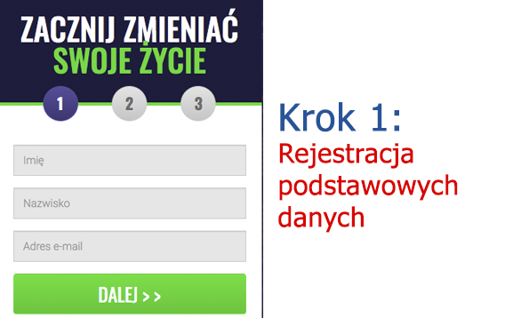

RAPORT SPECJALNY: ksperci są pełni podziwu dla Zygmunt Solorz-Żaka jego ostatniej inwestycji, co wywołało przerażenie wśród dużych banków."
Korzystając z tej „luki fortuny”, polscy obywatele zgarniają już miliony złotych bez wychodzenia z domu – ale czy to jest legalne?


(Puls Biznesu) - Polski biznesmen Zygmunt Solorz-Żak zdobył sławę jako zuchwała osoba mówiąca wprost, która nie ma oporów, by mówić szczerze o tym, jak zarabia pieniądze.
W zeszłym tygodniu Zygmunt był gościem programu „Kuba Wojewódzki Show”, w którym ujawnił nową „lukę fortuny”. Taka „luka”, wg jego słów, może zamienić każdą osobę w milionera w ciągu 3-4 miesięcy. Solorz-Żak przekonywał wszystkich ludzi w Polsce, by skorzystali z tej świetnej okazji, zanim wielkie banki ostatecznie tego zabronią.
…i rzeczywiście – kilka minut po zakończeniu wywiadu, Bank Pekao zadzwonił z żądaniem o wstrzymaniu publikacji edycji programu - ale było już za późno.
Oto co się dokładnie stało:
Gospodarz programu telewizyjnego „Kuba Wojewódzki Show” – Kuba Wojewódzki – zaprosił Zygmunt Solorz-Żaka, by podzielił się wskazówkami umożliwiającymi zdobycie fortuny, a biznesmen ujawnił wielką tajemnicę.
„Dzięki temu, że szybko korzystałem z nowych możliwości, osiągnąłem sukces – działałem bez wahania. Obecnie moim numerem jeden pod względem zarobku jest nowy, automatyczny system tradingowy w zakresie kryptowalut o nazwie Bitcoin Champion. To największa okazja, jaką widziałem w całym swoim życiu, umożliwiająca szybkie zdobycie małej fortuny. Nakłaniam wszystkie osoby, by ją sprawdziły, zanim banki tego zabronią”.
Kuba Wojewódzki nie mógł uwierzyć w to, co zobaczył – Zygmunt Solorz-Żak wyciągnął swój telefon i pokazał widzom, jak dużo zarabia pieniędzy dzięki temu nowemu systemowi do zarabiania, o którym aktualnie wszyscy mówią w Polsce.

Segment programowy dobiegł końca, zanim Zygmunt Solorz-Żak mógł dogłębnie opisać temat. Dlatego postanowiliśmy przeprowadzić z nim ekskluzywny wywiad, by dowiedzieć się więcej na temat tej kontrowersyjnej okazji.
EKSKLUZYWNY WYWIAD PULSU BIZNESU Z Zygmuntem Solorz-Żakiem
„Może słyszeliście o nowej platformie inwestycyjnej dla kryptowalut o nazwie Bitcoin Champion. Ten system pozwala zwyczajnym osobom w Polsce, Niemczech oraz Danii zdobyć fortuny w ciągu nocy. Możecie być sceptyczni, gdyż brzmi to zbyt pięknie, aby było prawdziwe."
Solorz-Żak kontynuował:
„Rozumiem to, bo moje wrażenie było identyczne, gdy powiedział mi o tym mój zaufany znajomy. Ale po tym, jak osobiście zobaczyłem kwoty, które zarabiał, sam musiałem tego spróbować.
Cieszę się, że postanowiłem spróbować, bo to były największe i najłatwiejsze pieniądze, jakie kiedykolwiek udało mi się zdobyć. Mówię o tysiącach złotych na dzień przy wykorzystaniu autopilota. Obecnie to dosłownie najszybsza metoda na mannę z nieba. Jednak taki stan rzeczy nie będzie trwał znacznie dłużej, kiedy coraz więcej ludzi dowie się o tym sposobie. Lub kiedy banki tego ostatecznie zabronią."
CZYM DOKŁADNIE JEST Bitcoin Champion I JAK TO DZIAŁA?
Pomysł na Bitcoin Champion był bardzo prosty: pozwolić zarobić przeciętnej osobie na koniunkturze związanej z kryptowalutami, które wciąż stanowią najbardziej lukratywny rodzaj inwestycji w XXI wieku, pomimo negatywnej opinii większości osób.
Chociaż cena obniżyła się z rekordowego poziomu 20 000 $ za jednego bitcoina, kupcy wciąż zarabiają krocie. Jak to możliwe? Ponieważ istnieją tysiące innych kryptowalut poza bitcoinem, którymi codziennie można handlować i osiągać wielkie zyski.
Niektóre z tych kryptowalut obejmują: ripple, ethereum, monero oraz zcash. Wciąż wśród zwyczajnych osób w Polsce notuje się zwroty na poziomie ponad 10 000%.
Bitcoin Champion pozwala Ci zarobić na tych wszystkich kryptowalutach, nawet podczas bessy. Korzysta ze sztucznej inteligencji (SI), by automatycznie obsługiwać sprzedaż w długim i krótkim czasie za Ciebie, co pozwala Ci zarabiać pieniądze całodobowo, nawet wtedy, gdy śpisz.
Bitcoin Champion jest wspierany przez jedne z najbystrzejszych umysłów pod względem technologii. Richard Branson, Elon Musk oraz Bill Gates – oto zaledwie kilka przykładów.

Ci geniusze w zakresie technologii rozwinęli firmy o wartości wielu miliardów dolarów w oparciu o rozwiązywanie skomplikowanych zagadnień, takich jak płatności online, obliczanie oraz transport. Aktualnie zajmują się światowym problemem nierównego podziału dobrobytu, pozwalając wszystkim ludziom – niezależnie od zamożności tych osób – na zarabianie takich kwot pieniędzy, by wieść szczęśliwe i spełnione życie..
TAJEMNICA ZARABIANIA LUKRATYWNYCH KWOT, KTÓRA JEST UKRYWANA PRZED TOBĄ PRZEZ WIELKIE BANKI
Zygmunt Solorz-Żak kontynuował:
„Obserwujemy trudne czasy dla gospodarki, a to jest rozwiązanie, którego ludzie oczekiwali. Nigdy w historii nie doświadczyliśmy tak doskonałej okazji, z której zwykłe osoby mogą łatwo skorzystać, by wygenerować olbrzymią fortunę w tak krótkim czasie.
Niektórzy ludzie wahają się, czy tego spróbować, gdyż ten sposób jest tak odmienny. Wynika to z faktu, że duże banki starają się to ukryć! Wielkie banki aktywnie uprawiają propagandę i twierdzą, że kryptowaluty oraz platforma jak Bitcoin Champion to oszustwa. Dlaczego? Martwią się o swoje dochody, które zmaleją, gdy ich klienci dowiedzą się, jak można na własną rękę zdobyć wielką fortunę.
Kryptowaluta to rewolucja naszego życia – to fakt – a każda osoba, która nie skorzysta z tej okazji, zostanie w tyle. Odebrałem już połączenia z wyzwiskami i pogróżkami od wielkich korporacji finansowych, ponieważ przykuwam uwagę ludzi nową technologią. Ale chrzanić te korporacje. Ludzie w Polsce już poznają prawdę, a to tylko kwestia czasu, zanim coraz więcej osób się o tym dowie.
Udostępniam to, gdyż otrzymałem również setki e-maili od osób, które dziękowały mi za to, że ujawniłem tę tajemnicę. Moją ulubioną wiadomością jest e-mail od młodego mężczyzny, który kupił swojemu młodszemu bratu jego wymarzony samochód – Ferrari 488 Pista – a na jego zakup przeznaczył środki wygenerowane dzięki systemowi Bitcoin Champion. Ta platforma naprawdę poprawia jakość życia wszystkich ludzi na świecie”.

CZY Bitcoin Champion NAPRAWDĘ DZIAŁA? TESTUJEMY GO OSOBIŚCIE
Nasi starsi redaktorzy nie pozwoliliby nam na publikację wywiadu z Zygmuntem Solorz-Żakiem, gdybyśmy nie zweryfikowali, że Bitcoin Champion stanowi legalną okazję na zarabianie pieniędzy w domu. Nasze kierownictwo nie chciało, abyśmy publikowali jakiekolwiek informacje, które mogłyby potencjalnie doprowadzić do utraty ciężko zarobionych pieniędzy przez obywateli Polski.
Dlatego nasz zespół redaktorów przetestował platformę Bitcoin Champion, by upewnić się, że ten system rzeczywiście działa, tak jak przedstawił to Zygmunt Solorz-Żak. Jeden z naszych redaktorów online – Bartek Kowalczyk – zgłosił się na ochotnika, by wypróbować Bitcoin Champion, ryzykując własnymi środkami finansowymi.
Bartek ma 53 lata i jest ojcem 2 chłopców, w ciągu ostatniego roku jego żona straciła pracę ze względu na chorobę. Przyznał, że borykał się z trudnościami finansowymi, a ta okazja inwestycyjna mogła stanowić środek zaradczy na jego problemy.

Bartek powiedział:
Początkowo, po wysłuchaniu wywiadu z Solorz-Żakiem, pomyślałem sobie, że to żarty. Zarabianie pieniędzy w domu to tylko marzenie. W każdym razie podjąłem decyzję, by tego spróbować, biorąc pod uwagę moje warunki finansowe i dla dobra dziennikarstwa.
Obejrzałem wprowadzający materiał wideo o platformie, a następnie zarejestrowałem się. Film obiecywał zbyt wiele, ale zapomniałem o swoim sceptycznym nastawieniu. W ciągu kilku godzin odebrałem połączenie od swojego osobistego inwestora. Odpowiedział na wszystkie moje pytania i ustosunkował się do wszystkich moich wątpliwości oraz zapewnił mnie, że na pewno zarobię pieniądze.
Mój osobisty inwestor obiecał mi nawet, że jeśli stracę choćby złotówkę, to on szybko zrefunduje moją wpłatę w wysokości 956 zł. Był na tyle przekonany, że ten system odmieni moje życie. Oto obsługa klienta, jakiej jeszcze nie uświadczyłem – nie dziwi mnie, że banki są tym przestraszone.
Po otrzymaniu dostępu do platformy zasiliłem swoją pierwszą inwestycję w wysokości 956 zł. To kwota, jaką moja rodzina przeznacza na jedzenie typu fast food każdego miesiąca, więc postanowiłem przestać uczęszczać do miejsc z takimi posiłkami przez miesiąc. W ten sposób teraz możemy cieszyć się zdrowiem oraz skorzystać z możliwości zdobycia dużych pieniędzy.
System Bitcoin Champion to platforma do automatycznego handlowania kryptowalutami. Oprogramowanie powstało w oparciu o zaawansowane algorytmy SI oraz uczenie maszynowe, aby dokładnie przewidzieć moment, w którym kryptowaluty zanotują wzrost i spadek. Następnie system będzie automatycznie dokonywał za Ciebie transakcji kupna i sprzedaży przez całą dobę. Technologia już uprościła nasze życie na każdy możliwy sposób, więc dlaczego jej nie wykorzystać do zarabiania dodatkowych pieniędzy?
WYNIKI BARTKA W CZASIE RZECZYWISTYM PO UŻYTKOWANIU SYSTEMU
„W ciągu godziny od wpłaty 956 zł, oprogramowanie zaczęło dokonywać transakcji w moim imieniu. Szczerze powiedziawszy, byłem nerwowy, bo bałem się, że przez tę platformę stracę wszystkie pieniądze. Rzeczywiście, moja pierwsza transakcja oznaczała stratę w wysokości 107 zł!
Coś stanęło mi w gardle. Poczułem się oszukany. Byłem już gotowy na to, by zadzwonić do swojego osobistego inwestora i poprosić o zwrot pieniędzy. Ale wtedy przypomniałem sobie o tym, co powiedział mi wcześniej w trakcie naszej rozmowy: algorytm nie myli się z prawdopodobieństwem 80-89%. Nie zarobisz na KAŻDEJ transakcji, ale zarobisz wystarczająco i ogólnie wykażesz zysk.
Dlatego pozwoliłem, by oprogramowanie nadal dokonywało za mnie transakcji i przyglądałem się uważnie. Kolejna transakcja okazała się zyskowna! Tylko 81 zł, ale zawsze coś. Później 218 zł i 94 zł zysku, co dało w sumie całkowity zysk w wysokości 287 zł. A to wszystko trwało mniej niż 5 minut!
Wkrótce zacząłem zgarniać gotówkę jak lody i nie mogłem uwierzyć własnym oczom.

Teraz wiem dlaczego Zygmunt Solorz-Żak jest wyśmienitym humorze przez cały czas i dlaczego wielkie banki nie chcą ludzi w pobliżu tej luki majątkowej. Pod koniec dnia zarobiłem ponad 3236zł zysku, nieźle jak na początkową inwestycje 956zł! Byłem tak podekscytowany, że ledwo spałem.
W kolejnym dniu, czyli we wtorek, musiałem wrócić do pracy. Szczerze powiedziawszy (i nie mówcie o tym mojemu szefowi), miałem trudności z koncentracją na mojej pracy, wiedząc, że oprogramowanie Bitcoin Champion zarabiało dla mnie pieniądze.
Kilka razy wyślizgnąłem się do toalety, by sprawdzić swoje zyski, które ciągle rosły (gdzieniegdzie widoczna była mała strata). Pod koniec dnia, zanim ułożyłem swoje dzieci do snu, saldo mojego konta wynosiło 5775zł. To więcej, niż zarabiam przez TYDZIEŃ w swojej normalnej pracy!
Pod koniec tygodnia zarobiłem łącznie 22 899zł. Wypłaciłem kwotę 4500 € (19 265zł) i przeznaczyłem ją na kolejną inwestycję. W ciągu 2 dni otrzymałem pierwszy czek pocztą – na kwotę 4500 €. Nie mogłem uwierzyć, że taka była rzeczywistość!”

Bartek kontynuował:
„Aktualnie osiągam stałe zyski w wysokości 3 000 - 6 000 zł na dzień dzięki platformie Bitcoin Champion. Pieniądze są po prostu przelewane na moje konto bankowe co kilka dni. Wystarczyło parę kliknięć i otrzymałem swoje środki w ciągu 24-48 godzin. Za każdym razem, gdy przelew dociera na moje konto, muszę się uszczypnąć, by uwierzyć w to, że nie śnię.
Na szczęście KOCHAM swoją pracę tutaj, ponieważ dziele się z ludźmi ważnymi historiami jako wiadomościami (jak omawianą historię), inaczej zrezygnowałbym już z pracy. Aby uczcić spłacenie długu i uzdrowienie rodzinnych finansów, zaplanowałem wakacje dla swojej rodziny na Bali w Indonezji!
To nie byłoby możliwe bez szczodrości Pana Solorz-Żaka i ujawnienia jego tajemnicy w programie na żywo w telewizji. Jestem szczęśliwy, że zaryzykowałem, by samemu wypróbować Bitcoin Champion. Moja żona jest zadowolona jak nigdy dotąd, a szafka na zabawki dla moich dzieci jest dobrze zaopatrzona.
Moi współpracownicy są wściekli przez to, że nie zarejestrowali się dwa tygodnie temu jak ja. Jednak wkrótce całe nasze biuro dokonało rejestracji (w tym mój szef), a teraz nazywają mnie »bohaterem«, ponieważ wypróbowałem ten system jako pierwszy”."
JAK ZACZĄĆ KORZYSTAĆ Z PLATFORMY Bitcoin Champion (DOSTĘPNA OGRANICZONA LICZBA MIEJSC)
Aby zacząć korzystać z platformy, Twój komputer, smartfon lub tablet musi mieć dostęp do Internetu. Nie musisz posiadać określonych umiejętności – wystarczy umiejętność posługiwania się komputerem oraz korzystania z przeglądarki internetowej. Doświadczenie z zakresu technologii lub kryptowaluty nie jest wymagane, ponieważ oprogramowanie oraz Twój osobisty inwestor gwarantują Ci wypracowanie zysku..
Kolejną korzyścią programu jest możliwość rozpoczęcia w dowolnym momencie. Możesz przygotować swój własny harmonogram – np. 5 godzin na tydzień lub 50 godzin na tydzień. Po prostu uruchom oprogramowanie do automatycznego handlowania, gdy będziesz mieć na to ochotę, a program możesz zatrzymać w dowolnej chwili (jednak nie wiem, dlaczego chciał(a)byś tak zrobić).
Aby zaoszczędzić czas czytelnika i podwójnie sprawdzić funkcjonalność, Bartek był na tyle życzliwy, by przygotować przewodnik, który pomaga rozpocząć korzystanie z systemu.
OTO MÓJ PRZEWODNIK KROK PO KROKU:
Pierwszą rzeczą, którą zobaczysz, jest film przedstawiający potęgę platformy Bitcoin Champion. Reklama jest duża i wyraźna, jest „bezczelna”, ale to amerykański produkt, a Amerykanie tak tworzą swoje produkty. W każdym razie, obok filmu po prostu zatwierdź swoje nazwisko oraz adres e-mail, aby zacząć od razu korzystać z systemu.
(Wskazówka:) jeśli nie zdecydujesz się na inwestycję jakichkolwiek pieniędzy, zalecam rejestrację w tej chwili, gdyż jest darmowa, a możliwość rejestracji dla obywateli Polski może skończyć się w każdej chwili)
Następnie zostaniesz poproszony(-a) o zasilenie swojego konta. Gdy przeglądałem stronę wpłaty, mój telefon komórkowy zadzwonił. To było połączenie międzynarodowe, więc przez chwilę się zawahałem, czy odebrać, ale zdałem sobie sprawę, że to było oczywiście połączenie przychodzące od/z.

Rzeczywiście to był mój osobisty opiekun. Świadczona przez niego obsługa była na wysokim poziomie. Poprowadził mnie przez cały proces zasilania. Firma przyjmuje płatności przy użyciu wszystkich popularnych kart kredytowych, takich jak Visa, MasterCard oraz American Express. Przeszedłem dalej i wpłaciłem minimalną kwotę w wysokości 250 USD lub 956 zł.

Po zasileniu przeszedłem do „Program do automatycznego handlowania” w sekcji oprogramowania, ustawiłem kwotę transakcyjną na rekomendowanym poziomie 50 € i uruchomiłem program. Oprogramowanie zaczęło handlować w szybkim tempie. Na początku byłem zmartwiony, ale nie wyłączyłem programu.
„Każda osoba pragnie być bogata, ale nikt nie wie, jak tego dokonać. Cóż, jest okazją życia, by wypracować fortunę, która pozwoli Ci na życie, jakiego naprawdę pożądasz. Ten system NIE będzie zawsze dostępny, więc nie przegap tej możliwości.” – powiedział Zygmunt Solorz-Żak
UPDATE
Właśnie otrzymaliśmy informacje, że od dzisiaj () prawie wszystkie miejsca są zajęte przez obywateli Polski. Bitcoin Champion może łącznie przyjąć tylko ograniczoną liczbę użytkowników ze względu na chęć utrzymania wysokiego zysku przypadającego na użytkownika. Aktualnie wciąż pozostało (37) miejsc, więc pospiesz się i zarejestruj się teraz, by zarezerwować swoje miejsce..
WYNIKI CZYTELNIKÓW
ZYSK: 23 828 zł

„Korzystałem z Bitcoin Champion przez ponad 2 tygodnie, z początkowej wpłaty 954 zł wypracowałem 24 901 zł zysku. To znacznie więcej, niż zarabiam w pracy.
Adam Bankowski
Katowice, Poland
ZYSK: 39 485 zł

„Właśnie osiągnęłam 39 485 zł zysku – już po miesiącu korzystania z Bitcoin Champion. Jako że mogę korzystać z platformy na swoim laptopie, podróżowałam po Polsce i zarabiałam pieniądze przez cały ten czas!”
Edmund Abramczyk
Lublin, Poland
ZYSK: 95 362 zł

„To takie proste w użytkowaniu, nawet dla mnie! Nigdy wcześniej nie zajmowałem się transakcjami, ale zarabiam ponad 12 000 zł na tydzień i kocham życie!”
Lena Baranek
Gdynia, Poland
ZYSK: 180 017 zł

„W końcu mogłem porzucić pracę – tylko dzięki platformie Bitcoin Champion. Zarobiłem tak dużo w tak prosty sposób!”
Julek Dutko
Warszawa, Polska
ZYSK: 32 279 zł

„Korzystałam z platformy Bitcoin Champion przez 2 tygodnie i już zapłaciłam za swoje wakacje w Europie”.
Amelia Jusko
Toruń, Polska
ZYSK: 252 126 zł

„Połączyłem siły z moimi przyjaciółmi i razem rozbiliśmy bank zaledwie po 3 tygodniach. Automat transakcyjny wykonuje całą pracę za Ciebie. Razem zarabiamy ponad 72 000 zł na tydzień”
Denis Franco & Alek Galaska
Wrocław, Polska
ZYSK: 52 795 zł

„Mój Chłopak powiedział mi o tym i to zmieniło moje życie. Zarabiam 8 500 zł na tydzień już od ponad miesiąca, a pracuję mniej niż 30 minut dziennie”
Zofia Karcz
Poznań, Polska
Postępuj zgodnie z 3 prostymi krokami, aby zacząć korzystać z platformy:

Krok 1:
Krok 2:


 207
135
207
135
 33
33
 132
132
 122
122
 141
141
 112
112
 114
114
 124
124
 99
99
 95
95
 93
93
 92
92
 89
89
 86
86
 79
79
 73
73
 52
52
 45
45
 1
1
 0
0
Someone is writing a comment